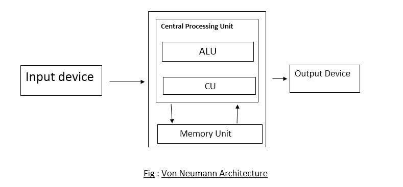

Von Neumann Architecture
Von Neumann Architecture was designed by renowed mathematician and physicist Jon Von Neumann in 1945.The idea behind the Von Neumann architecture is the ability to store instruction in the memory along with the data on which the instructions operates. In short, Von Neumann architecture refers to the general framework that the computer’s hardware, programming and data should follow.

The Von Neumann architecture consists of three distinct components: Central Processing Unit(CPU), memory unit and I/O interface.The CPU is the heart of computer which is also further divided into three main components i.e ALU,CU and registers.
The ALU is responsible for carrying out all the arithmetic and logical operation on data whereas the control unit determines the order of flow of instruction which needs to be executed in program by issuing the control signals to the hardware.
The registers are basically temporary storage location that stores address of instruction which needs to be executed
The memory unit consists of RAM, which is the main memory of the computer used to store program data and instructions.
The I/O interface allows user to communicate with outside world such as storage device…
Difference between Von Neumann and Harvard architecture
| Von-Neumann Architecture |
Harvard Architecture |
| 1.It is a theoretical design based on store program computerr concept. |
1.It is a modern computer architecture based on Harvard Mark-I computer model. |
| 2.It uses same physical memory address for data and instruction. |
2.It uses separate memory address for data and instruction. |
| 3.Processor needs two clock cycle to execute an instruction. |
3.Processor needs one cycle to complete an instruction. |
| 4.Data transfer and instruction fetches cannot be preformed simultaneously. |
4.Data transfer and instruction fetches can be performed at the same time. |
| 5.It is used in personal computer,laptops and workstations. |
5.It is used in microcontrollers and signal processing. |
|